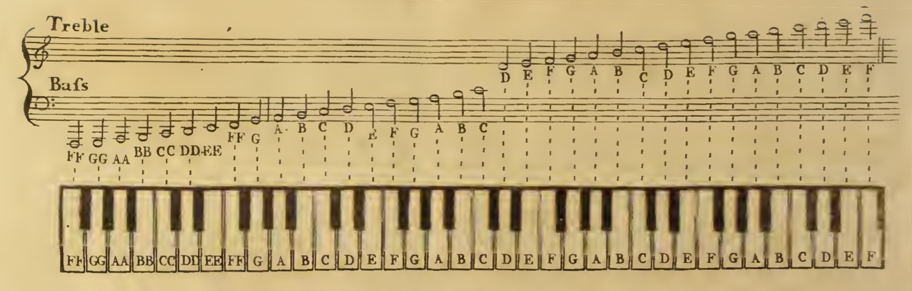
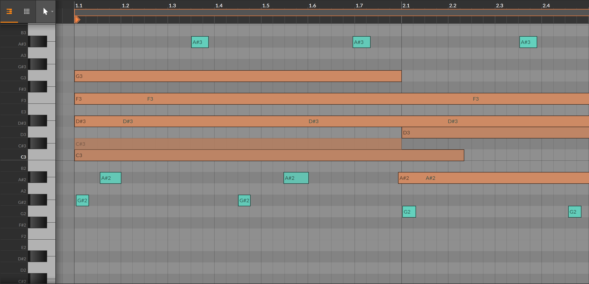

1. 形形色色的音符命名体系
1. 形形色色的音符命名体系
作为步入音乐理论实战的第一站，我们首先需要系统理清音符的名称（音名与唱名）。提到声音的名字，大家脑海中最先浮现的必定是“Do-Re-Mi-Fa-Sol-La-Si”；然而一旦聊起和弦进行，满纸又变成了“C - F - G”这类英文字母；在传统经典乐理书中，甚至还会冒出“C大调”、“A小调”等术语。在正式启航之前，我们先把这几套体系的对应关系彻底梳理清楚。
唱名（Do-Re-Mi）、英文字母（ABC）、以及东方传统乐典译名，本质上都是在表达相同的音高梯级。让我们通过一张图表直观对比：

“A” 对应 “La”，随后按字母与唱名顺序依次顺延。请务必牢记：英文字母表的起点“A”，对应的不是“Do”，而是“La”！
传统汉字律名 / 假名译名
在传统经典音乐教育或日式乐理中，曾借用中国古律名或日文假名（如伊吕波假名、宫商角徵羽）来命名调号（如“ハ长调”对应 C大调，“ト音记号”对应 G谱号高音谱号）。然而在当今现代流行音乐创作中，这些繁冗复古的旧记法早已被全面淘汰。在本网站中，除了作为历史背景偶有提及其规范中文意译外，一律不再使用任何陈旧的假名或律名记法。
字母音名（ABC 体系）
作为当今全球通用的国际标准，采用英文字母“A、B、C、D、E、F、G”来标记绝对物理音高的体系，被称为音名（Pitch Names / Note Names）[88]。
很多人初学者误以为 ABC 这些字母“仅仅用来给和弦命名”，但这完全本末倒置——它们最初确立时，纯粹是用来给每一个单独的单音命名的，后来在历史演进中才顺理成章被沿用为以该音为根音的和弦代号。

Joseph Gehot, 《音乐理论与实践三篇论》（1786年出版文献第11页）这是一份18世纪的历史珍贵文献。如你所见，早在两百多年前的钢琴键盘上，每一个琴键就已被工整地赋予了专属的 ABC 字母音名。在本网站的后续讲解中，初期我们会先使用大家耳熟能详的唱名“Do-Re-Mi”，随后会逐步平稳过渡到更加专业的“A音”、“C♯音”等国际通用字母表述。
唱名（Do-Re-Mi 体系）
那么，全世界妇孺皆知的“Do-Re-Mi”究竟发源于何处呢？这要归功于11世纪意大利传奇音乐理论家——*阿雷佐的圭多（Guido d'Arezzo）*的天才创见。他在一首用拉丁语谱写的宗教赞美诗《圣约翰赞美诗（Ut queant laxis）》中敏锐发现：全曲每一个乐句的第一个起始音符，恰好严丝合缝地沿着音阶逐级向上爬坡（Do-Re-Mi-Fa-Sol-La）！
这首名垂青史的赞美诗及其拉丁文原歌词如下：
Ut queant laxis Resonare fibris Mira gestorum Famuli tuorum Solve polluti Labii reatum Sancte Iohannes
圭多灵光乍现：只要教会修士们记住这首赞美诗的旋律，以后任何时候想要找准音高，直接顺着唱出每句开头的第一个音不就行了吗？！这一伟大的教学法迅速风靡，赞美诗每句开头的音节——“Ut, Re, Mi, Fa, So, La, Si”随即被正式确立为全欧洲通用的音符代号。 最初的最低音并非“Do”，而是“Ut”，直到数百年后为了发音顺口与歌唱共鸣的便利，才在17世纪被更圆润响亮的“Do”所取代[89]。
由人声歌词提炼而来的 Do-Re-Mi 天生具备极佳的歌唱顺口性，这套体系在专业乐理中被称为唱名（Solfège）。它在后续建立首调调性认知与旋律外壳音分析中，将继续扮演不可替代的核心角色。
2. 升号与降号（Sharp and Flat）
除了自然音外，“升号（Sharp）”与“降号（Flat）”同样是大众耳熟能详的基础符号。它们的中英文对照规范如下：
升号与降号术语对照
| 符号 | 英文名称 | 现代中文通用名称 | 传统古典学术汉字 |
|---|---|---|---|
| ♯ | Sharp | 升号 | 婴（えい） |
| ♭ | Flat | 降号 | 变（へん） |
因此例如“F♯”，现代中文直接称呼为“升F”即可；传统古文称谓如“婴F / 婴ヘ”仅作历史常识了解，在后续实战中坚决弃用。
异名同音（等音，Enharmonic）
在键盘物理世界中，“Sol♯（G♯）”与“La♭（A♭）”在钢琴上敲击的是同一个完全相同的物理黑键。这种“发音完全相同、但因记谱或调性逻辑不同而拥有不同名字”的两颗音符之间的关系，在音乐理论中被称为异名同音（等音 / Enharmonic）。
 “Sol♯ 与 La♭ 互为异名同音”
“Sol♯ 与 La♭ 互为异名同音”
如果单看孤立的物理琴键，无论叫它 G♯ 还是叫它 A♭ 没有任何本质区别。但在具体的实际音乐作品中，根据前后的调性引力走向与和声逻辑脉络，它究竟该归属于哪个称谓有着极其严谨的理论讲究。 尤其在小提琴无品拉弦乐器或人声纯律演唱中，根据前后和声倾向，优秀大师在微调音高时甚至会在听感上表现出几音分（Cents）极其微妙的微观物理音高偏置；乃至不同律制调音系统下，两者的实际振动频率也会产生细微差异。
不过在学习初期，究竟何时记作 G♯、何时记作 A♭，只需随着后续调性与音阶的学习自然水到渠成即可，当下完全不必为此焦虑。
3. 八度编号体系（Octave Numbering）
单独一个音名（如“A”或“La”），仅仅定义了它的音级属性，并不包含其具体处于哪一个高低八度音区的信息。为了消除沟通歧义，在编曲宿主软件（DAW）与声学工程中，普遍采用在字母后附加阿拉伯数字来标识其所在八度的标准方案。


例如比 C3 高出整整一个八度的那个 Do，便被精准标注为 C4。然而在这里存在一个长年令音乐工程师与制作人抓狂的历史痛点——全球各大音频软硬件厂商，关于八度编号的基准基点至今未能实现绝对大一统！

以标准88键域钢琴最正中心的那颗核心音符——俗称**中央C（Middle C）**为例，各大宿主平台对它的命名划分直接割裂为两大阵营：
| 标称命名 | 采用该标准的厂商与软件平台 |
|---|---|
| C3 | Yamaha、Apple（Logic Pro）、Native Instruments、Ableton Live、Cubase、Studio One、Pro Tools 等 |
| C4 | Roland、Korg、Sibelius、Dorico、Melodyne、科学音高记法（SPN 标准）等 |
| C5 | FL Studio 等 |
在严肃声学与欧美大学学术界推崇的“科学音高记法（SPN）”体系中，中央 C 严格定义为“C4”；然而在现代电脑音乐制作（DAW）的浩瀚市场版图中，主流宿主软件（Logic, Ableton, Cubase...）却大面积偏好将其标注为“C3”！
这一历史遗留割裂，经常导致在 DAW 轨道中打开某款第三方插件音源时，宿主卷帘上明明写着 C3、插件内部却显示为 C4 的乌龙错位。虽然许多现代插件已开始支持用户在系统设置中自主切换中央 C 的基准，但知晓这一行业常识，能够极大避免在未来的跨团队协作或跨软硬件交互时产生不必要的误会[90]。
梳理了这么多背景知识，真正需要你牢固刻入本能的核心其实极其纯粹：在音乐理论中，音符既会使用“Do-Re-Mi”也会使用“A-B-C-D-E-F-G”来指代；并且英文字母“A”所对应的那个核心音符，正是唱名中的“La”。只要彻底掌握这一点，你便已经稳稳拿下了通关钥匙！
核心小结
- 音乐中音符的命名因语境不同而使用多种语言，但在现代流行音乐与编曲实战中，英文字母音名是全球通行的绝对标准。
- 拉丁语系的唱名“Do-Re-Mi”在剖析首调调性与听觉心理中依然扮演着不可替代的角色。
- 请务必千百次警惕：英文音名体系的起始字母“A”，对应的是“La”，而非“Do”！